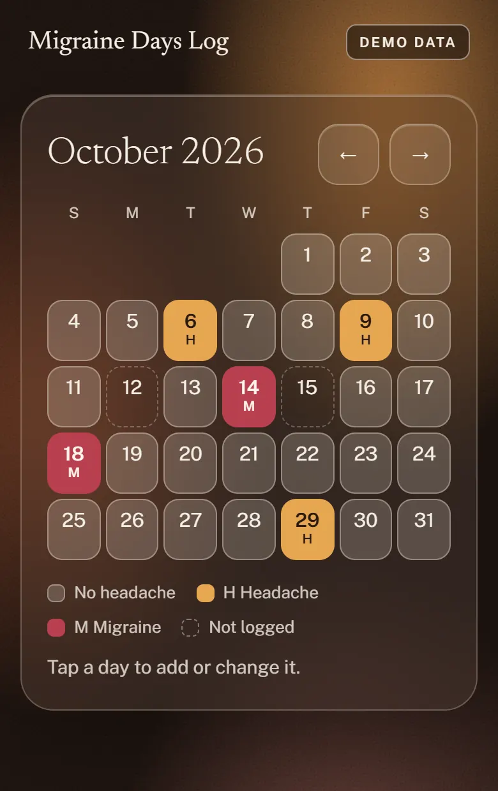
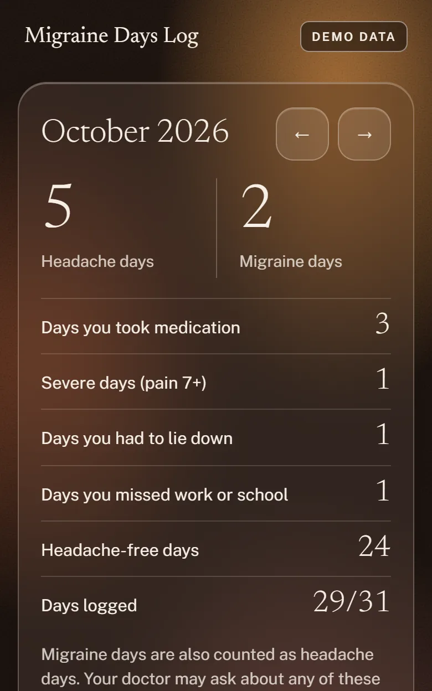

A diary only helps if you keep it up. This one asks for one tap on a normal day and a few more on a bad one.
Start the free phone diary Print the one-page version
No account, no sign-up. The phone diary saves to your own device, with optional email sync so you don't lose it (privacy). Daily log, calendar and this month's counts are free; a $19 one-time unlock adds history, averages and a printable report.

Every day, one thing: was it a clear day, a headache day or a migraine day? Whether a day counts as a migraine is your call, or your doctor's definition.
On a headache or migraine day, a few more if you can manage them:
That is the core of the diary. It leaves out food, weather, sleep and stress. If your doctor asks you to track any of them, use the notes field.
A diary that only has entries on bad days can't tell a good week from a week you forgot to write. So log the clear days too. On the phone that is one tap.
Days you skip stay marked "not logged". They are never quietly counted as headache-free, which would make your month look better than it was.
Doctors often ask: how many headache days a month, how many of those were migraine, and on how many days you took medication for an attack. A diary answers them, if someone adds it up.
The paper version has a totals line to fill in at the end of the month. The phone version counts as you go and shows the month on one screen.
It counts what you enter. It does not diagnose, look for causes or suggest treatment.
One page per month, one row per day. Write C, H or M for each day, fill in the totals at the bottom, and bring the sheets to your appointment. Free to print.
Opens in your browser, works offline after your first visit, and keeps its data on your device. On iPhone, adding it to your home screen makes it less likely to be cleared. Daily logging, the calendar and this month's counts are free. A $19 one-time unlock adds month-by-month history, averages and a printable summary. What the full log adds.
